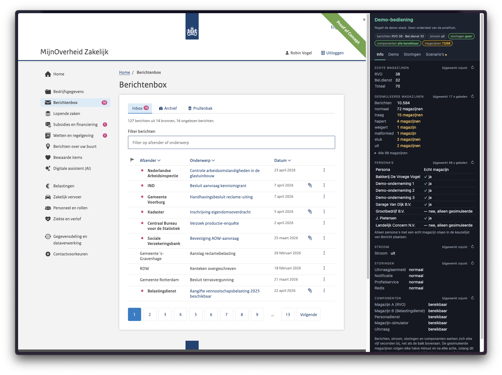

MijnOverheid Zakelijk · 25 september 2026
Alle berichten van de overheid, op de plek die voor jou logisch is
Voor de ondernemer: nu
Berichten staan in de Berichtenbox voor bedrijven, in een eigen MijnOmgeving van de organisatie, of bestaan nog helemaal niet digitaal.
Voor de ondernemer: waar het heen gaat
In MijnOverheid Zakelijk, een ander portaal of je eigen bedrijfssoftware. Elke organisatie bewaart haar eigen berichten, een portaal of applicatie haalt ze daar op.
De Wmebv-keten
Door de Wet modernisering elektronisch bestuurlijk verkeer (Wmebv) mag de overheid digitaal sturen, als de ondernemer dat zelf aangeeft. Dan moet de hele keten meedoen.
Een besluit of beschikking komt als brief op de mat.
De organisatie zet het bericht klaar. De ondernemer krijgt binnen 48 uur een seintje. En leest het bericht online.
Zo werkt het
De organisatie zet het bericht in haar eigen berichtenmagazijn.
Direct, of op een gekozen publicatiedatum, gaat er een seintje naar de notificatiedienst.
“Er staat een bericht voor je klaar.”
In het portaal ziet de ondernemer alle berichten van de overheid bij elkaar.
Het portaal haalt het bericht op bij het magazijn van de organisatie. Er is geen centrale opslag nodig.
Demo

Links het portaal zoals de ondernemer het ziet. Rechts de bediening van de demo.
De demo opent in een nieuw tabblad. Sluit dat tabblad om terug te gaan naar de presentatie.
Onder de motorkap
MijnOverheid Zakelijk, een app, bedrijfssoftware, enzovoort
Bevraagt alle magazijnen tegelijk en bundelt de berichten. Bewaart zelf niets.
Route 2: direct, zonder uitvraagsysteem
Berichtenmagazijnen
Wie ben je, en namens wie? DigiD, eHerkenning en straks de business wallet.
Federatieve Toegangsverlening (FTV): mag je dit bericht zien? De applicatie vraagt het aan een aparte autorisatiedienst (AuthZEN).
Keuze voor digitaal en je contactgegevens
Het seintje dat er iets klaarstaat, en contactherstel als dat nodig is
Logboek Dataverwerkingen (LDV): wie deed wat met je gegevens?
Logboek toegangsbeslissingen (ADL): waarom kreeg iemand toegang?
Hoe verder
Meer weten of meedoen? Neem contact op met het team: mijnoverheidzakelijk.nl/contact